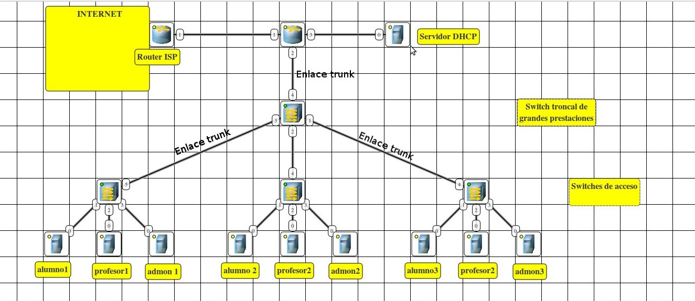

Clasificación IP y Configuraciones de red
Infografía y guia pràctica: IPs, máscaras, VLAN, VMs, Windows y Linux.
Para comenzar:
- Clasificación de IPs: explicación y ejemplos de direcciones IP.
- Máscaras: explicación de las mascaras de red.
- VLAN: explicación de las VLANs y su configuración básica.
- Maquinas virtuales: explicación de los diferentes modos de adaptador en las maquinas virtuales.
- Configuración de red en Windows: guia para asignar IPs estáticas.
- Configuración de red en Linux: guia para asignar IPs estáticas.
Classificación de IPs:
Clases y rangos importantes
- Classe A: 0.0.0.0 a 127.0.0.0 – Mascara: 255.0.0.0
- Classe B: 128.0.0.0 a 191.0.0.0 – Mascara: 255.255.0.0
- Classe C: 192.168.4.6 a 223.0.0.0 – Mascara: 255.255.255.0
- Classe D: 224.0.0.0 a 239.0.0.0 - Mascara: No tiene una mascara de subred predeterminda, porque esta clase esta dedicada a multidifusión (multicast).
- Classe E: 240.0.0.0 a 255.0.0.0 - Mascara: Esta clase de IPs esta reservado para el uso experimental y usos de investigaciones.
Rangos privados (uso habitual):
- Clase A: 10.0.0.0 - Mascara: /8
- Clase B: 172.16.0.0 hasta 172.31.0.0 - Mascara: /16
- Clase C: 192.168.0.0 - Mascara: /24

Imatge recomanada: ips-example.png
Máscaras de red y càlculo:
Conceptos básicos:
La máscara define la parte de la IP que corresponde a la red. Ejemplos comunes:
- /8 → 255.0.0.0
- /16 → 255.255.0.0
- /24 → 255.255.255.0
Ejemplo de cálculo:
IP 192.168.10.0/24 → xarxa: 192.168.10.0, broadcast: 192.168.10.255, hosts: 192.168.10.1–192.168.10.254 (254 hosts).
Subnetting (exemple /26)
/26 → 255.255.255.192 → blocs de 64 adreces (62 hosts útils). De 192.168.10.0/24 en /26 obtenim 4 subxarxes: 192.168.10.0, .64, .128, .192.
Ej: IP: 192.168.10.70/26 Máscara: 255.255.255.192 Red: 192.168.10.64 Primer host: 192.168.10.65 Último host: 192.168.10.126 Broadcast: 192.168.10.127
Tabla de máscaras comunes:

CIDR: por su nombre completo Classeless Inter-Domain Routing o en castellano: enrutamiento entre dominios sin clases. El CIDR se introdujo en 1993 por IETF y representa la última mejora en el modo de interpretar las direcciones IP.
VLAN — Què és y para que sirven
VLAN = Virtual Local Area Network. Segmenta una misma red física en múltiples segmentos lògicos para el separar trànsito, para mejorar seguridad y gestión.
Configuración básica en Cisco (Packet Tracer)
Switch> enable Switch# configure terminal Switch(config)# vlan 10 Switch(config-vlan)# name VOICE Switch(config)# interface FastEthernet0/1 Switch(config-if)# switchport mode access Switch(config-if)# switchport access vlan 10
Per trunks:
Switch(config)# interface GigabitEthernet0/1 Switch(config-if)# switchport mode trunk Switch(config-if)# switchport trunk allowed vlan 10,20
Red en Máquinas Virtuales
Diferentes modos de adaptador que hay y los más utilizados en las maquinas virtuales:
- NAT: la VM comparte la IP del anfitrión; accéso saliendo a Internet.
- Bridged (puente): la VM aparece a la red física con su propia IP.
- Host-only: red privada entre host i VMs (sin Internet per defecto).
- Internal: red solo entre VMs.
Ejemplo: assignar IP estàtica con netplan
network:
version: 2
ethernets:
enp0s3:
addresses: [192.168.56.10/24]
gateway4: 192.168.56.1
nameservers:
addresses: [8.8.8.8,8.8.4.4]
Los diferentes modos de red que hay y que existen en las Maquinas Virtuales

Configuración de red en Windows
GUI (Windows 10/11)
- Abrir configuración → Red y internet → Ethernet/Wi‑Fi.
- Cambiar las propiedades del adaptador → Asignar IP manualmente.
PowerShell (assignar IP estàtica)
# Encontrar el nombre del adaptador
Get-NetAdapter
# Assignar IP
New-NetIPAddress -InterfaceAlias "Ethernet" -IPAddress 192.168.1.50 -PrefixLength 24 -DefaultGateway 192.168.1.1
# Assignar DNS
Set-DnsClientServerAddress -InterfaceAlias "Ethernet" -ServerAddresses ("8.8.8.8","8.8.4.4")
Configuración de red en Linux (Debian i Ubuntu 24.04)
Debian (ifupdown — /etc/network/interfaces)
# Exemple /etc/network/interfaces
auto eth0
iface eth0 inet static
address 192.168.10.20
netmask 255.255.255.0
gateway 192.168.10.1
dns-nameservers 8.8.8.8 8.8.4.4
Ubuntu 24.04 (netplan)
# /etc/netplan/01-network.yaml
network:
version: 2
ethernets:
enp0s3:
dhcp4: no
addresses: [192.168.10.30/24]
gateway4: 192.168.10.1
nameservers:
addresses: [8.8.8.8,8.8.4.4]
# Aplicar
sudo netplan apply
Comprovar: ip a, ip route, ping 8.8.8.8